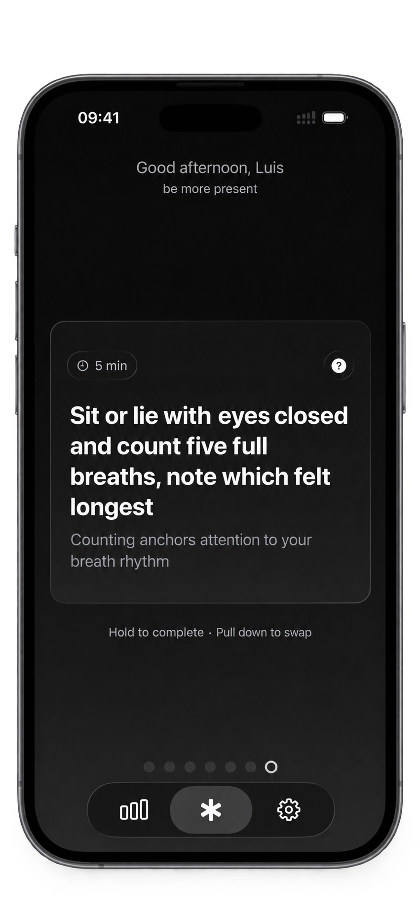

One goal.
One step.
Every day.
Say what you want to get better at. Every day 1% gives you one small step toward it — five to twenty minutes, specific enough to start now.

Say what you want to get better at. Every day 1% gives you one small step toward it — five to twenty minutes, specific enough to start now.
